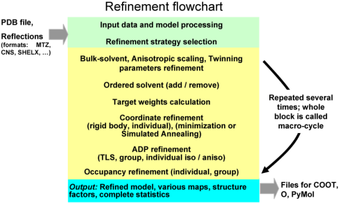
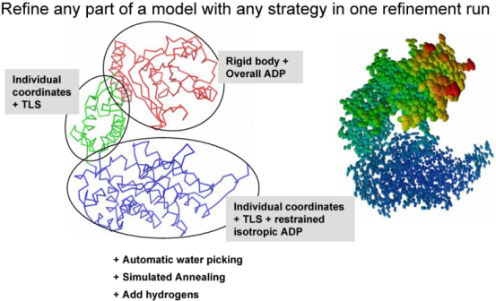

phenix.refine - general purpose crystallographic structure refinement program
This document describes phenix.refine with the emphasis on the command line use. Graphical User Interface (GUI) is available for phenix.refine (see below). The phenix.refine software is designed for use with crystallographic data such as X-ray diffraction or neutron data. For refinement of structures with cryo-EM data, normally you should use real space refinement with phenix.real_space_refine.
A complete graphical interface for phenix.refine is available; it includes integration with several refinement-related utilities such as phenix.ready_set, phenix.simple_ncs_from_pdb, phenix.find_tls_groups and more. All of the program details described in this document should apply to the GUI as well.
- Restrained or unrestrained individual, in real or reciprocal space
- Grouped (rigid body)
- LBFGS minimization, Cartesian or torsion Simulated Annealing
- Selective removing of stereochemistry restraints
- Adding custom (user-defined) restraints (bonds, angles, etc)
- Fixing (not refining) coordinates of any selected part of the structure
- NCS: global (Cartesian), local (torsion), constraints ("strict" NCS)
- Restraints specific to low-resolution refinement: secondary structure, reference model, Ramachandran plot restraints
- Restrained individual isotropic, anisotropic, mixed
- Group isotropic (one isotropic B per selected model part). Modes to refine one or two group B per residue (for side and main chains)
- TLS (Translation-Libration-Screw-rotation model)
- Comprehensive mode: combined TLS + individual or group ADP
Although phenix.refine will read both data types, intensities or amplitudes, internally it uses amplitudes in nearly all calculations. Intensities are converted into amplitudes using French&Wilson method.

Multiple refinement strategies can be combined and applied to any selected part of a model as illustrated below:

phenix.refine can be run from the command line:
% phenix.refine <pdb-file(s)> <reflection-file(s)> <monomer-library-file(s)> <parameter-keyword(s)> <parameter-file(s)>
or from PHENIX GUI.
When you do this a number of things happen:
PDB file with the refined model called for example lysozyme_refine_001.pdb. This file contains REMARK records summarizing details about refinement run, as well as model, data and model-to-data fit statistics. Also, it contains REMARK 3 records that can be used for PDB deposition.
MTZ file (e.g. lysozyme_refine_001.mtz) that contains:
- Copy if input data (for example, Iobs, R-free flags)
- Data actually used in refinement and calculation of reported statistics. These can be different from input data for a number of reasons: a) conversion Iobs to Fobs (if Iobs were input), b) truncation by resolution and/or sigma (if requested by the user), c) automated rejection of reflection-outliers.
- Total model structure factors (Fmodel). Fmodel includes all scales and bulk-solvent contribution and is defined as Fmodel = k_total * (Fcalc_atoms + k_mask * Fmask)
- Fourier map coefficients that can be used for example in Coot or XtalView to visualize the maps. They correspond to 2mFobs-DFmodel map calculated using original set of Fobs, 2mFobs-DFmodel "filled" map, where missing Fobs are substituted with some expected values, residual mFobs-DFmodel map, and anomalous difference map (if input data was anomalous: contained Fobs(+) and Fobs(-) separately).
log file that contains detailed information about refinement run.
geo file is a foot print of all geometry restraints used in refinement, such as bonds, angles, planarity, chirality, dihedral, non-bonded. For each type of restraints current model and ideal (library) values are listed. This file allows to pinpoint all the restraints that an atom in question is involved.
Optionally, actual maps can be output in CCP4 binary format or X-plor plain text format.
def file: a new defaults file to run the next cycle of refinement, e.g. lysozyme_refine_002.def. This means you can run the next cycle of refinement by typing:
% phenix.refine lysozyme_refine_002.def
To get information about command line options type:
% phenix.refine --help
To have the program generate the default input parameters without running the refinement job (e.g. if you want to modify the parameters prior to running the job):
% phenix.refine --dry_run <pdb-file> <reflection-file(s)>
If you know the parameter that you want to change you can override it from the command line:
% phenix.refine data.hkl model.pdb xray_data.low_resolution=8.0 \ simulated_annealing.start_temperature=5000
Note that you don't have to specify the full parameter name. What you specify on the command line is matched against all known parameters names and the best substring match is used if it is unique. Otherwise a list of possible options is provided.
To rerun a job that was previously run:
% phenix.refine --overwrite lysozyme_refine_001.def
or:
% phenix.refine lysozyme_refine_001.def overwrite=true
The order of commands is not important.
The --overwrite (or overwrite=True) option allows the program to overwrite existing files. By default the program will not overwrite existing files - just in case this would remove the results of a refinement job that took a long time to finish.
To see all default parameters:
% phenix.refine --show-defaults
To see difference between default settings and a parameter file:
% phenix.refine --diff-params lysozyme_refine_001.def
In phenix.refine parameters to control refinement can be given by the user on the command line:
% phenix.refine data.hkl model.pdb simulated_annealing=true
However, sometimes the number of parameters is large enough to make it difficult to type them all, for example:
% phenix.refine data.hkl model.pdb refine.adp.tls="chain A" \ refine.adp.tls="chain B" main.number_of_macro_cycles=4 \ xray_data.high_resolution=2.5 wxc_scale=3 wxu_scale=5 \ output.prefix=my_best_model strategy=tls+individual_sites+individual_adp \ simulated_annealing.start_temperature=5000
The same result can be achieved by using:
% phenix.refine data.hkl model.pdb custom_par_1.params
where the custom_par_1.params file contains the following lines:
refinement.refine.strategy=tls+individual_sites+individual_adp refinement.refine.adp.tls="chain A" refinement.refine.adp.tls="chain B" refinement.main.number_of_macro_cycles=4 refinement.target_weights.wxc_scale=3 refinement.target_weights.wxu_scale=5 refinement.output.prefix=my_best_model refinement.simulated_annealing.start_temperature=5000 data_manager.fmodel.xray_data.high_resolution=2.5
which can also be formatted by grouping the parameters under the relevant scopes (custom_par_2.params):
refinement.main {
number_of_macro_cycles=4
}
data_manager.fmodel.xray_data.high_resolution=2.5
refinement.refine {
strategy = *individual_sites \
rigid_body \
*individual_adp \
group_adp \
*tls \
occupancies \
group_anomalous \
none
adp {
tls = "chain A"
tls = "chain B"
}
}
refinement.target_weights {
wxc_scale=3
wxu_scale=5
}
refinement.output.prefix=my_best_model
refinement.simulated_annealing.start_temperature=5000
and the refinement run will be:
% phenix.refine data.hkl model.pdb custom_par_2.params
The easiest way to create a file like the custom_par_2.params file is to generate a template file containing all parameters by using the command phenix.refine --show-defaults and then keep the parameters that you want to use and remove the rest.
Comments in parameter files
Use # for comments:
% phenix.refine data.hkl model.pdb comments_in_params_file.params
where comments_in_params_file.params file contains the lines:
refinement {
refine {
#strategy = individual_sites rigid_body individual_adp group_adp tls \
# occupancies group_anomalous *none
}
#main {
# number_of_macro_cycles = 1
#}
}
refinement.target_weights.wxc_scale = 1.5
#data_manager.fmodel.xray_data.low_resolution=5.0
In this example the only parameter that is used to overwrite the defaults is target_weights.wxc_scale and the rest is commented out.
The refinement of atomic parameters is controlled by the strategy keyword. Those include:
- individual_sites (refinement of individual atomic coordinates) - individual_sites_real_space (same as above performed real space) - individual_adp (refinement of individual atomic B-factors) - group_adp (group B-factors refinement) - group_anomalous (refinement of f' and f" values) - tls (TLS refinement = refinement of ADP through TLS parameters) - rigid_body (rigid body refinement) - occupancies (occupancy refinement: individual, group, group constrained) - none (bulk solvent and anisotropic scaling only)
Below are examples to illustrate the use of the strategy keyword as well as a few others.
% phenix.refine data.hkl model.pdb
This will perform coordinate refinement, restrained ADP refinement and occupancy refinement (if applicable, see Occupancy refinement section for details). Three macrocycles will be executed, each consisting of bulk solvent correction, anisotropic scaling of the data, coordinate refinement (25 iterations of the LBFGS minimizer) and ADP refinement (25 iterations of the LBFGS minimizer).
Coordinates can be refined using:
- individual coordinate refinement using gradient-driven (LBFGS) minimization;
- individual coordinate refinement in real-space using a combination of gradient-driven (LBFGS) minimization and local torsion-angle grid searches;
- individual coordinate refinement using simulated annealing (SA refinement);
- grouped coordinate refinement (rigid body refinement);
- group-constrained refinement in torsion angle space using SA (often called torsion angle simulated annealing refinement).
The default restrained refinement includes a standard set of stereo-chemical restraints (covalent bonds, angles, dihedrals, planarities, chiralities, non-bonded). The NCS restrains can be added as well. Completely unrestrained refinement is possible.
The total refinement target is defined as:
Etotal = wxc_scale * wxc * Exray + wc * Egeom
where: Exray is crystallographic refinement target (least-squares, maximum-likelihood, or any other), Egeom is the sum of restraints (including NCS if requested), wc is 1.0 by default and used to turn the restraints off, wxc ~ ratio of gradient norms for geometry and X-ray targets as defined in (Adams et al, 1997, PNAS, Vol. 94, p. 5018), wxc_scale is an empirical scale that is typically between 0 and 10. Egeom can optionally include reference model, secondary structure and Ramachandran plot restraints.
By default coordinates of all atoms are refined. It is possible to refine coordinates of only selected atoms.
Using strategy=rigid_body or strategy=individual_sites will ask phenix.refine to refine only coordinates while other parameters (ADP, occupancies) will be fixed (not refined).
phenix.refine will stop if an atom on special position is included into group of atoms that are subject to rigid body refinement. The solution is to make a new rigid body group selection containing no atoms on special positions.
Rigid body refinement
phenix.refine implementation of rigid body refinement is highly and efficient (large convergence radius, no need to cut high-resolution data). We call this MZ protocol (multiple zones). The essence of MZ protocol is that the refinement starts with a few reflections selected in the lowest resolution zone and proceeds with gradually adding higher resolution reflections. Also, it almost constantly updates the mask and bulk solvent model parameters and this is crucial since the bulk solvent affects the low resolution reflections - exactly those the most important for success of rigid body refinement. The default set of the rigid body parameters is good for most of the cases and is normally not supposed to be changed.
Rigid body refinement does not use any restraints. This means that rigid-body groups may bump into each other (overlap) or if covalently bonded atoms belong to different rigid groups then the bond linking these atoms may (and likely will) break as result of rigid body refinement.
One rigid body group per chain (default behavior):
% phenix.refine data.hkl model.pdb strategy=rigid_body
Multiple groups (requires a basic knowledge of the Phenix atom selection syntax):
% phenix.refine data.hkl model.pdb strategy=rigid_body \ sites.rigid_body="chain A" sites.rigid_body="chain B"
This will refine the chain A and chain B as two rigid bodies. The rest of the model will be kept fixed.
If there are many rigid groups to define, typing them in the command line may be a tedious exercise. In this case a better alternative is to create a parameter file rigid_body_selections containing the following lines:
refinement.refine.sites {
rigid_body = chain A
rigid_body = chain B
}
The command line will then be:
% phenix.refine data.hkl model.pdb strategy=rigid_body \ rigid_body_selections.params
Files like this can be created, for example, by copy-and-paste from the complete list of parameters (phenix.refine --show-defaults).
To switch from MZ protocol to traditional way of doing rigid body refinement (not recommended!):
% phenix.refine data.hkl model.pdb strategy=rigid_body \ rigid_body.number_of_zones=1 rigid_body.high_resolution=4.0
For such refinement to be useful one needs to cut the high-resolution data off at some arbitrary point around 3-5 A (depending on model size and data quality).
By default rigid body refinement is run only the first macro-cycle. To switch from running rigid body refinement only once at the first macro-cycle to running it every macro-cycle:
% phenix.refine data.hkl model.pdb strategy=rigid_body \ rigid_body.mode=every_macro_cycle
To change the default number of lowest resolution reflections used to determine the first resolution zone to do rigid body refinement in it (for MZ protocol only):
% phenix.refine data.hkl model.pdb strategy=rigid_body \ rigid_body.min_number_of_reflections=250
Decreasing this number may increase the convergence radius of rigid body refinement but small numbers may lead to refinement instability and nonsensical model shifts.
To change the number of zones for MZ protocol:
% phenix.refine data.hkl model.pdb strategy=rigid_body \ rigid_body.number_of_zones=7
Increasing this number may increase the convergence radius of rigid body refinement at the cost of much longer run time.
Rigid body refinement can be combined with individual refinement of coordinates:
% phenix.refine data.hkl model.pdb strategy=rigid_body+individual_sites
this will perform 3 macro-cycles of individual coordinate refinement and the rigid body refinement will be performed only once at the first macro-cycle. More powerful combination for coordinates refinement is:
% phenix.refine data.hkl model.pdb strategy=rigid_body+individual_sites \ simulated_annealing=true
this will do the same refinement as above combined with the Simulated Annealing refinement at the second macro-cycle.
Refinement of individual coordinates
Refinement with Simulated Annealing:
% phenix.refine data.hkl model.pdb simulated_annealing=true \ strategy=individual_sites
This will perform Simulated Annealing refinement and LBFGS minimization for the whole model. SA will run on select macro-cycle(s) only (not every macro-cycle).
To change starting SA temperature:
% phenix.refine data.hkl model.pdb simulated_annealing=true \ strategy=individual_sites simulated_annealing.start_temperature=10000
There are several options defining of how many times the SA will be performed per refinement run. Run it only the first macro_cycle:
% phenix.refine data.hkl model.pdb simulated_annealing=true \ strategy=individual_sites simulated_annealing.mode=first
or every macro-cycle:
% phenix.refine data.hkl model.pdb simulated_annealing=true \ strategy=individual_sites simulated_annealing.mode=every_macro_cycle
or second and before the last macro-cycle:
% phenix.refine data.hkl model.pdb simulated_annealing=true \ strategy=individual_sites simulated_annealing.mode=second_and_before_last
Other options may exist: check all parameters for details.
Refinement with minimization (whole model):
% phenix.refine data.hkl model.pdb strategy=individual_sites
Refinement with minimization (selected part of model):
% phenix.refine data.hkl model.pdb strategy=individual_sites \ sites.individual="chain A"
This will refine the coordinates of atoms in chain A only.
To perform unrestrained refinement of coordinates (usually at ultra-high resolution):
% phenix.refine data.hkl model.pdb strategy=individual_sites wc=0
This assigns the contribution of the geometry restraints target to zero. However, it is still calculated for statistics output.
Removing selected geometry restraints
In the example below:
% phenix.refine data.hkl model.pdb remove_restraints_selections.params
where remove_restraints_selections.params contains:
refinement {
geometry_restraints.remove {
angles = chain B
dihedrals = name CA
chiralities = all
planarities = None
}
}
the following restraints will be removed: angle for all atoms in chain B, dihedral for all involving CA atoms, all chirality. All planarity restraints will be preserved.
Real-space refinement of coordinates
Local refinement: amino-acid side-chain rotamer correction to eliminate outliers and find better fit to the map. Enabled by default, and controlled by strategy=individual_sites_real_space keyword. Overall (global) real-space refinement only happens at low resolution if the program decided to do so. Results of global real-space refinement may or may not be accepted by the program, which is based on comparison of R factors before and after refinement.
An ADP in phenix.refine is defined as a sum of three contributions:
Utotal = Ulocal + Utls + Ucryst
where Utotal is the total ADP, Ulocal reflects the local atomic vibration (also named as residual B) and Ucryst reflects global lattice vibrations. Ucryst is determined and refined as part of overall anisotropic scaling.
Options for ADP refinement:
- individual isotropic, anisotropic or mixed ADP;
- grouped with one isotropic ADP per selected group;
- TLS;
Any combination of the above options (exception: an atom participating in TLS group cannot be a subject of individual anisotropic ADP refinement) can be applied to any selected part of a model. For example, if a model contains six chains A, B, C, D, E and F than it would require only one single refinement run to perform refinement of:
- individual isotropic ADP for atoms in chain A,
- individual anisotropic ADP for atoms in chain B,
- grouped B with one B per all atoms in chain C,
- TLS refinement for chain D,
- TLS and individual isotropic refinement for chain E,
- TLS and grouped B refinement for chain F.
Restraints are used for default ADP refinement of isotropic and anisotropic atoms. Completely unrestrained refinement is possible.
The total refinement target is defined as:
Etotal = wxu_scale * wxu * Exray + wu * Eadp
where: Exray is crystallographic refinement target (least-squares, maximum-likelihood, ...), Eadp is the ADP restraints term, wu is 1.0 by default and used to turn the restraints off, wxu and wxu_scale are defined similarly to coordinates refinement (see Refinement of Coordinates paragraph).
Atoms that participate in TLS refinement have ANISOU records in output PDB file. The anisotropic B-factor in ANISOU records is the total B-factor (Utls + Ulocal). The isotropic equivalent B-factor in ATOM records is the mean of the trace of the ANISOU matrix divided by 10000 and multiplied by 8*pi^2. It represents the isotropic equivalent of the total B-factor. To obtain the individual B-factors (Ulocal), one needs to compute the TLS component (Utls) using the TLS records in PDB file header and then subtract it from the total B-factors. This can be done using phenix.tls tool.
When performing TLS refinement along with individual isotropic refinement the restraints are applied to Ulocal only and not to the total ADP.
Group isotropic ADP refinement uses harmonic restraints on group B values to make overall B factors of adjacent residues less dissimilar.
TLS refinement alone does not use any restraints.
When ADP refinement is run without using selections then ADP of all atoms are refined. If selections are used, only ADP of selected atoms are refined.
phenix.refine will stop if an atom on special position is included in TLS group. The solution is to make a new TLS group selection containing no atoms on special positions.
Refining group isotropic B-factors
One B-factor per residue:
% phenix.refine data.hkl model.pdb strategy=group_adp
Two B-factors per residue:
% phenix.refine data.hkl model.pdb strategy=group_adp \ group_adp_refinement_mode=two_adp_groups_per_residue
This only applies to amino acid residues.
One isotropic B per selected group of atoms:
% phenix.refine data.hkl model.pdb strategy=group_adp \ group_adp_refinement_mode=group_selection \ adp.group="chain A" adp.group="chain B"
This will refine one isotropic B for chain A and one B for chain B.
Refinement of group isotropic B-factors in phenix.refine does not change the original distribution of B-factors within the group: the differences between B-factors for atoms within the group remain constant. Example: if 10,15,25 are B-factors of atoms subject to group B-factor refinement, then after refinement they may have B-factors such as 5,10,20 or 13,18,28.
Atoms with anisotropic ADP are allowed to be within the group; anisotropy of such atoms will not be changes during group B-factor refinement.
Refinement of individual ADP (isotropic, anisotropic)
By default atoms in a PDB file with ANISOU records are refined as anisotropic and atoms without ANISOU records are refined as isotropic. This behavior can be changed with appropriate keywords, and also a subject to automatic adjustments.
If atoms have ANISOU records and are not a part of TLS group, and also the data resolution is lower than switch_to_isotropic_high_res_limit parameter, then ADPs of such atoms are reset to isotropic and will be refined as such.
Default refinement of individual ADP:
% phenix.refine data.hkl model.pdb strategy=individual_adp
Note, atoms in input PDB file with ANISOU records will be refined as anisotropic and those without ANISOU - as isotropic (subject to automatic adjustments - see above).
Refinement of individual isotropic ADP for a model previously refined as anisotropic or TLS:
% phenix.refine data.hkl model.pdb strategy=individual_adp \ adp.individual.isotropic=all
or equivalently:
% phenix.refine data.hkl model.pdb strategy=individual_adp \ convert_to_isotropic=true
All anisotropic atoms in input PDB file will be converted to isotropic before the refinement starts.
Refinement of individual anisotropic ADP for a model previously refined as isotropic:
% phenix.refine data.hkl model.pdb strategy=individual_adp \ adp.individual.anisotropic="not element H"
This will refine all atoms as anisotropic except hydrogens.
Refinement of mixed model (some atoms are isotropic, some are anisotropic):
% phenix.refine data.hkl model.pdb strategy=individual_adp \ adp.individual.anisotropic="chain A and not element H" \ adp.individual.isotropic="chain B or element H"
In this example atoms (except hydrogens if any) in chain A will be refined as anisotropic and atoms in chain B (and hydrogens if any) will be refined as isotropic. Often, the ADP of water and hydrogens are desired to be refined as isotropic while the other atoms - as anisotropic:
% phenix.refine data.hkl model.pdb strategy=individual_adp \ adp.individual.anisotropic="not water and not element H" \ adp.individual.isotropic="water or element H"
Exactly the same command using slightly shorter selection syntax:
% phenix.refine data.hkl model.pdb strategy=individual_adp \ adp.individual.anisotropic="not (water or element H)" \ adp.individual.isotropic="water or element H"
Shortcuts can be used: adp.individual.aniso or adp.individual.iso.
To perform unrestrained individual ADP refinement (usually at ultra-high resolutions):
% phenix.refine data.hkl model.pdb strategy=individual_adp wu=0
This assigns the contribution of the ADP restraints target to zero. However, it is still calculated for statistics output.
When selections adp.individual.aniso or adp.individual.iso are used, B-factors of selected atoms are refined, while B-factors of other atoms are not refined.
TLS refinement
Refinement of TLS parameters only:
% phenix.refine data.hkl model.pdb strategy=tls
Refinement of TLS parameters only using multiple TLS groups:
% phenix.refine data.hkl model.pdb strategy=tls tls_group_selections.params
where, similar to the rigid body or group B-factor refinement, the selection for TLS groups has been made in a user-created parameter file (tls_group_selections.params) as following:
refinement.refine.adp {
tls = chain A
tls = chain B
}
Alternatively, the selection for the TLS groups can be made from the command line (see rigid body refinement for an example).
Note: TLS parameters will be refined only for selected fragments. This, for example, will allow to not include the solvent molecules into the TLS groups.
Most useful is to perform combined TLS and individual or group isotropic ADP refinement:
% phenix.refine data.hkl model.pdb strategy=tls+individual_adp
or:
% phenix.refine data.hkl model.pdb strategy=tls+group_adp
This will allow to model global (TLS) and local (individual) components of the total ADP and also compensate for the model parts where TLS parametrization doesn't suite well.
Partitioning model into TLS groups can be done automatically as part of refinement:
% phenix.refine data.hkl model.pdb strategy=tls tls.find_automatically=True
or using a dedicated tool:
% phenix.find_tls_groups model.pdb
Multiple CUPs (if available) can be used to speed-up the task:
% phenix.find_tls_groups model.pdb nproc=48
Very important: automatic TLS group identication strongly relies on correctly refined B-factors and relatively good model geometry. Poor B-factors or model geometry may result in nonsensical TLS groups.
List of facts about occupancy refinement in phenix.refine:
phenix.refine can perform the following types of occupancy refinement:
Occupancy refinement is always enabled by default. This does not mean that occupancies of all atoms will be refined. Based on input PDB file, phenix.refine automatically finds which occupancies it will be refining. If no user defined selections is provided, phenix.refine will refine:
individual occupancies for all atoms that have partial occupancy values in input PDB file (not equal to 0 or 1), for example:
ATOM 1001 AU AU 500 14.333 3.856 26.301 0.23 7.97
occupancies of atoms in alternative conformations. Atoms in alternative conformations will be automatically determined based on altLoc identifiers (a one-letter code in front of three-letter residue name in ATOM record) in input PDB file and the group constrained occupancy refinement for these atoms will be performed. For example:
ATOM 5085 N AALA 270 19.772 -6.267 40.250 0.75 5.17 ATOM 5086 CA AALA 270 19.927 -5.299 41.342 0.75 5.15 ATOM 5087 CB AALA 270 20.132 -6.108 42.617 0.75 6.92 ATOM 5088 C AALA 270 21.058 -4.290 41.124 0.75 5.06 ATOM 5089 O AALA 270 20.831 -3.090 41.384 0.75 5.54 ATOM 5090 N BALA 270 19.733 -6.282 40.242 0.25 5.04 ATOM 5091 CA BALA 270 19.592 -5.512 41.492 0.25 5.03 ATOM 5092 CB BALA 270 19.702 -6.389 42.726 0.25 6.62 ATOM 5093 C BALA 270 20.673 -4.426 41.454 0.25 4.77 ATOM 5094 O BALA 270 20.381 -3.268 41.761 0.25 5.70
Starting occupancy values can be any. Setting them to some reasonable values, like 0.75 and 0.25 above, may help refinement to converge faster. Refined occupancy values will be looking like in the above example: identical for all atoms within each conformer (in this example: 0.75 for conformer A and 0.25 for conformer B), and the sum of unique occupancies across all conformers will be exactly 1 (=0.25+0.75).
If there are two or more consecutive residues in the same chain that have alternative conformations, then their occupancies will be automatically grouped and refined. For example:
ATOM 0 N AGLY A 1 2.650 4.221 1.463 0.70 18.35 ATOM 1 CA AGLY A 1 2.206 4.688 2.763 0.70 17.27 ATOM 2 C AGLY A 1 3.296 4.604 3.813 0.70 4.90 ATOM 3 O AGLY A 1 4.143 3.711 3.772 0.70 10.35 ATOM 4 N BGLY A 1 3.650 6.221 4.463 0.30 18.35 ATOM 5 CA BGLY A 1 3.206 6.688 5.763 0.30 17.27 ATOM 6 C BGLY A 1 4.296 6.604 6.813 0.30 4.90 ATOM 7 O BGLY A 1 5.143 5.711 6.772 0.30 10.35 ATOM 8 N AALA A 2 3.276 5.538 4.758 0.70 8.03 ATOM 9 CA AALA A 2 2.260 6.584 4.782 0.70 4.94 ATOM 10 C AALA A 2 2.886 7.964 4.606 0.70 8.07 ATOM 11 O AALA A 2 3.307 8.594 5.576 0.70 2.01 ATOM 12 CB AALA A 2 1.465 6.522 6.077 0.70 4.52 ATOM 13 N BALA A 2 4.276 7.538 7.758 0.30 8.03 ATOM 14 CA BALA A 2 3.260 8.584 7.782 0.30 4.94 ATOM 15 C BALA A 2 3.886 9.964 7.606 0.30 8.07 ATOM 16 O BALA A 2 4.307 10.594 8.576 0.30 2.01 ATOM 17 CB BALA A 2 2.465 8.522 9.077 0.30 4.52
where the occupancies of conformer A (in residue numbers 1 and 2) are all equal to each other (0.7), the occupancies of conformer B are all equal to each other as well (0.3), and their sum is 1 (0.7+0.3).
It is possible to have multiple different (having different residue name) alternative conformers within the same residue number of the same chain:
ATOM 0 N APRO A 22 4.915 12.683 -3.102 0.25 11.83 ATOM 1 CA APRO A 22 6.042 13.429 -2.601 0.25 11.82 ATOM 2 C APRO A 22 6.387 13.122 -1.160 0.25 11.66 ATOM 3 O APRO A 22 5.480 13.006 -0.345 0.25 12.09 ATOM 4 CB APRO A 22 5.655 14.896 -2.744 0.25 12.86 ATOM 5 CG APRO A 22 4.661 14.854 -4.058 0.25 12.66 ATOM 6 CD APRO A 22 3.957 13.505 -3.910 0.25 12.27 ATOM 7 CA BSER A 22 6.034 13.399 -2.687 0.30 11.55 ATOM 8 C BSER A 22 6.367 13.062 -1.223 0.30 12.92 ATOM 9 O BSER A 22 5.412 13.050 -0.345 0.30 11.87 ATOM 10 CB BSER A 22 5.409 14.835 -2.876 0.30 12.60 ATOM 11 OG BSER A 22 4.760 15.243 -1.635 0.30 12.11 ATOM 12 CA CSER A 22 6.112 13.653 -2.656 0.45 12.31 ATOM 13 C CSER A 22 6.354 13.275 -1.187 0.45 11.92 ATOM 14 O CSER A 22 5.636 12.705 -0.270 0.45 11.77 ATOM 15 CB CSER A 22 5.605 15.097 -2.687 0.45 13.56 ATOM 16 OG CSER A 22 6.750 15.771 -2.280 0.45 16.38
If a structure contains a residue or ligand with all equal non-zero occupancies, for example:
ATOM 6 S SO4 1 1.302 1.419 1.560 0.70 13.00 ATOM 7 O1 SO4 1 1.497 1.295 0.118 0.70 11.00 ATOM 8 O2 SO4 1 1.098 0.095 2.140 0.70 10.00 ATOM 9 O3 SO4 1 2.481 2.037 2.159 0.70 14.00 ATOM 10 O4 SO4 1 0.131 2.251 1.823 0.70 12.00
one occupancy per whole ligand will be refined automatically and it will be constrained between 0 and 1. If at least one occupancy is different from the rest:
ATOM 6 S SO4 1 1.302 1.419 1.560 0.70 13.00 ATOM 7 O1 SO4 1 1.497 1.295 0.118 0.21 11.00 ATOM 8 O2 SO4 1 1.098 0.095 2.140 0.70 10.00 ATOM 9 O3 SO4 1 2.481 2.037 2.159 0.70 14.00 ATOM 10 O4 SO4 1 0.131 2.251 1.823 0.70 12.00
then the occupancies of all atoms will refined individually. In this example:
ATOM 6 S SO4 1 1.302 1.419 1.560 0.70 13.00 ATOM 7 O1 SO4 1 1.497 1.295 0.118 0.70 11.00 ATOM 8 O2 SO4 1 1.098 0.095 2.140 0.00 10.00 ATOM 9 O3 SO4 1 2.481 2.037 2.159 0.70 14.00 ATOM 10 O4 SO4 1 0.131 2.251 1.823 0.70 12.00
all occupancies will be refined individually except for atom O2 where it will stay zero.
A special case is refinement of a partially deuterated structure against neutron data. phenix.refine will treat exchangeable H/D sites as alternative conformations, for example:
ATOM 54 N GLY L 2 2.908 -22.755 25.168 1.00 12.24 N ATOM 55 CA GLY L 2 2.957 -24.115 25.675 1.00 13.12 C ATOM 56 C GLY L 2 2.218 -24.358 26.958 1.00 15.55 C ATOM 57 O GLY L 2 2.343 -25.435 27.503 1.00 13.47 O ATOM 58 HA2 GLY L 2 2.590 -24.711 25.004 1.00 15.29 H ATOM 59 HA3 GLY L 2 3.885 -24.361 25.816 1.00 16.65 H ATOM 60 H AGLY L 2 2.349 -22.638 24.525 0.25 18.77 H ATOM 61 D BGLY L 2 2.349 -22.638 24.525 0.75 18.77 D
This situation is detected automatically and the occupancies of H and D atoms are refined in such a way so their sum is one. In addition, B-factors and coordinates of such atoms are set to be identical.
Disabling occupancy refinement can be done by removing the star (*) from the corresponding keyword in strategy = ... *occupancies ... (in case parameter file is used).
If selections are provided by the user then the occupancy refinement for selected atoms will be performed as well as for those selected automatically.
User defined selections will override those defined by phenix.refine automatically.
User can withhold occupancy refinement for atoms that were automatically selected by phenix.refine for occupancy refinement.
The presence of user defined selections for occupancies to be refined is not enough to engage the occupancy refinement. It is important that the occupancy refinement is enabled by using the strategy = keyword.
Examples:
Running with all default parameters:
% phenix.refine data.hkl model.pdb
This will refine individual coordinates, individual B-factors (isotropic or anisotropic) and occupancies for atoms in alternative conformations or for atoms having partial occupancies. If there is no such atoms in input PDB file, then no occupancies will be refined.
Refinement of occupancies only:
% phenix.refine data.hkl model.pdb strategy=occupancies
This will only refine occupancies for atoms in alternative conformations or for atoms having partial occupancies. If there is no such atoms in input PDB file, then no occupancies will be refined. Other model parameters, such as B-factors or coordinates will not be refined.
Refine individual occupancies of water molecules (in addition to atoms with partial occupancies and those in alternative conformations, if any):
% phenix.refine data.hkl model.pdb refine.occupancies.individual="water"
Similar refinement as above where all Zn atoms in chain X will be refined as well:
% phenix.refine data.hkl model.pdb occupancies.individual="water" \ occupancies.individual="chain X and element Zn"
Complex occupancy refinement strategy (combination of various available occupancy refinement types):
% phenix.refine data.hkl model.pdb strategy=occupancies occ.params
The amount of atom selections makes it inconvenient to type them all from the command line. This is why the parameter file occ.params is used and it contains following lines:
refinement { refine { occupancies { individual = element BR or water individual = element Zn constrained_group { selection = chain A and resseq 1 } constrained_group { selection = chain A and resseq 2 selection = chain A and resseq 3 } constrained_group { selection = chain X and resname MAN selection = chain X and resseq 42 selection = chain X and resseq 121 } remove_selection = chain B and resseq 1 and name O remove_selection = chain B and resseq 3 and name O } } }which defines:
- individual occupancy refinement for all BR, Zn and water atoms;
- group occupancy refinement for residue number 1 in chain A (as selected with chain A and resseq 1). One occupancy for all atoms in this residue will be refined and it will be constrained between main.occupancy_min and main.occupancy_min, which by default is 0 and 1, correspondingly.
- another constrained occupancy group, where the occupancies of atoms in chain A and resseq 2 and chain A and resseq 3 will be coupled. That is all occupancies within chain A and resseq 2 will have the exact same value between 0 and 1, and same for chain A and resseq 3. The sum of occupancies of chain A and resseq 2 and chain A and resseq 3 will be 1.0, making it one constrained group.
- another constrained group contains three residues (number 42 and 121, and MAN) and their occupancies will be refined similarly as described above.
- occupancies of atoms O in residues 1 and 3 of chain B will not be refined as requested using remove_selection keyword (even though these atoms have partial occupancies in input PDB file and so they would normally be refined by default).
If the structure contains anomalous scatterers (e.g. Se in a SAD or MAD experiment), and if anomalous data are available, it is possible to refine the dispersive (f') and anomalous (f") scattering contributions (see e.g. Ethan Merritt's tutorial for more information). In phenix.refine, each group of scatterers with common f' and f" values is defined via an anomalous_scatterers scope, e.g.:
refinement.refine.anomalous_scatterers {
group {
selection = name BR
f_prime = 0
f_double_prime = 0
refine = *f_prime *f_double_prime
}
}
NOTE: The refinement of the f' and f" values is carried out only if group_anomalous is included under refine.strategy! Otherwise the values are simply used as specified but not refined. So the refinement run with the parameters above included into group_anomalous_1.params:
% phenix.refine model.pdb data_anom.hkl group_anomalous_1.params \ strategy=individual_sites+individual_adp+group_anomalous
If required, multiple scopes can be specified, one for each unique pair of f' and f" values. These values are assigned to all selected atoms (see Phenix atom selection syntax for details). Often it is possible to start the refinement from zero. If the refinement is not stable, it may be necessary to start from better estimates, or even to fix some values. For example (file group_anomalous_2.params):
refinement.refine.anomalous_scatterers {
group {
selection = name BR
f_prime = -5
f_double_prime = 2
refine = f_prime *f_double_prime
}
}
% phenix.refine model.pdb data_anom.hkl group_anomalous_2.params \
strategy=individual_sites+individual_adp+group_anomalous
Here f' is fixed at -5 (note the missing * in front of f_prime in the refine definition), and the refinement of f" is initialized at 2.
The phenix.form_factor_query command is available for obtaining estimates of f' and f" given an element type and a wavelength, e.g.:
% phenix.form_factor_query element=Br wavelength=0.8 Information from Sasaki table about Br (Z = 35) at 0.8 A fp: -1.0333 fdp: 2.9928
Run without arguments for usage information:
% phenix.form_factor_query
Note that if you perform anomalous refinement, you may also want to include a log-likelihood gradient anomalous map (map_type=llg) in the output, as this will show any unmodeled anomalous scattering with greater sensitivity than the conventional anomalous difference map.
phenix.refine can use NCS as restraints or constraints. NCS restraints can be torsion- or Cartesian-based. NCS-related atoms can be identified automatically or be defined by the user.
The default NCS implementation in phenix.refine restrains NCS-related chains in torsion angle space.
Hydrogen atoms are excluded from NCS restraints.
Note that user-supplied NCS groups will be filtered at all times. More on this here.
Torsion NCS (default)
Torsion-based NCS restraints use a flexible target function that is smoothly shuts off as the difference between related torsions increases, allowing for local differences between NCS-related chains. The default behavior identifies related chains automatically, but users may also specify NCS groups.
Automatic rotamer outlier correction and rotamer consistency checks between NCS-related sidechains are carried out for refinements against data at 3.0 A and better.
No NCS restraints applied to B-factors.
Refinement with automatic group determination:
% phenix.refine data.hkl model.pdb ncs_search.enabled=True
Refinement with user provided NCS selections:
Create a torsion_ncs.params file with selections like:
refinement.pdb_interpretation.ncs_group {
reference = chain A
selection = chain B
selection = chain C
}
Specify torsion_ncs.params as an additional input when running phenix.refine:
% phenix.refine data.hkl model.pdb ncs_search.enabled=True \ torsion_ncs.params
Cartesian NCS (optional)
Cartesian-based NCS restraints are also available in phenix.refine. Atoms in NCS-related chains are restrained to the average xyz position.
Gaps in selected sequences are allowed - a sequence alignment is performed to detect insertions or deletions. We recommend to check the automatically detected or adjusted NCS groups.
Refinement with user provided NCS selections:
Create a ncs_groups.params file with the NCS selections:
refinement.pdb_interpretation.ncs_group {
reference = chain A resid 1:4
selection = chain B and resid 1:3
selection = chain C
}
refinement.pdb_interpretation.ncs_group {
reference = chain E
selection = chain F
}
Specify ncs_groups.params as an additional input when running phenix.refine:
% phenix.refine data.hkl model.pdb ncs_groups.params \ ncs_search.enabled=True ncs.type=cartesian
This will perform the default refinement round (individual coordinates and B-factors) using NCS restraints on coordinates and B-factors.
Note: user specified NCS restraints in ncs_groups may be modified automatically if specified groups are not match each other.
Automatic detection of NCS groups:
% phenix.refine data.hkl model.pdb ncs_search.enabled=True \ ncs.type=cartesian
This will perform the default refinement round (individual coordinates and B-factors) using NCS restraints automatically created based on input PDB file.
NCS constraints (optional)
NCS constraints are used very similarly to NCS restraints (see above) except that ncs.type needs to be set to constraints:
% phenix.refine data.hkl model.pdb ncs_search.enabled=True \ ncs.type=constraints
or in case NCS groups are provided:
% phenix.refine data.hkl model.pdb ncs_search.enabled=True \ ncs.type=constraints ncs_groups.params
Please read an overview about secondary structure restraints which provides overall description and ways to get correct secondary structure definitions. This part of documentation provides only specific to phenix.refine information.
At low resolutions it is often beneficial to restrain hydrogen bonding distances in helices, sheets, and nucleic acid base pairs. These can be used with or without explicit hydrogen atoms. Appropriate atom selections will be detected automatically if none are provided by the user, but in most cases careful manual annotation will probably yield better results, especially if the starting model is of low quality. To turn on the additional restraints a single extra parameter is sufficient:
% phenix.refine data.hkl model.pdb secondary_structure.enabled=True
You can also generate starting parameters for secondary structure restraints using a standalone utility
% phenix.secondary_structure_restraints model.pdb
This will print a set of parameters suitable for use in phenix.refine, which may be edited to correct errors or add undetected groups.
Like other restraints, the hydrogen bond distances have adjustable sigma and target values; these are defined in the secondary_structure.protein scope. The default potential mimics the covalent bond restraints. The sigma defaults to 0.05 Angstrom; the default target is 2.9A, but can be changed:
% phenix.refine data.hkl model.pdb secondary_structure.enabled=True \ secondary_structure.protein.distance_ideal_n_o=2.0
Parameters such as sigma, slack and the usage of top_out potential are defined separately for each secondary structure element. A relatively strict outlier cutoff is applied by default, to prevent improperly restraining incorrectly annotated residues. Any bonds longer than the outlier cutoff (3.5A) will not be restrained. If you are certain of your annotations, you can increase the cutoff:
% phenix.refine data.hkl model.pdb secondary_structure.enabled=True \ secondary_structure.protein.distance_cut_n_o=4.0
or disable outliers removal completely:
% phenix.refine data.hkl model.pdb secondary_structure_restraints=True \ secondary_structure.protein.remove_outliers=False
phenix.refine can be given a reference model that is used to steer refinement of the working model. This technique is advantageous in cases where the working data set is low resolution, but there is a known related structure solved at higher resolution. The higher resolution reference model is used to generate a set of dihedral restraints that are applied to each matching dihedral in the working model.
Reference chains are matched to working chains automatically, and sequences need not match exactly.
The default parameters are a good starting point:
% phenix.refine data.hkl model.pdb reference_model.enabled=True \ reference_model.file=reference.pdb
The default sigma value for these reference dihedral restraints is 1.0 degrees. To increase the strength of these restraints, select a smaller sigma:
% phenix.refine data.hkl model.pdb reference_model.enabled=True \ reference_model.file=reference.pdb reference_model.sigma=0.5
To decrease the strength of the restraints, select a larger sigma:
% phenix.refine data.hkl model.pdb reference_model.enabled=True \ reference_model.file=reference.pdb reference_model.sigma=2.0
The reference restraints have a limit parameter which turns them off when the angle in the working model differs from the reference by an amount greater than limit. The default value is 15 degrees, but may be user-defined:
% phenix.refine data.hkl model.pdb reference_model.enabled=True \ reference_model.file=reference.pdb reference_model.limit=10
For an optimal set of protein restraints, rotamer outliers in the working model that have rotameric counterparts in the reference model are automatically corrected to the rotamer from the reference model prior to refinement. In practice this step almost always improves the final model, but can be turned off if desired:
% phenix.refine data.hkl model.pdb reference_model.enabled=True \ reference_model.file=reference.pdb reference_model.fix_outliers=False
Selections may also be used with reference_model restraints. Selections are useful in cases where multiple chains in the working model should be restrained to the same reference chain, the model or reference have insertions that change the register, only part of a chain is desirable to restrain, etc.
To specify selections, create a reference.params file with selections like:
refinement.reference_model.reference_group {
reference = chain A and resseq 2:119
selection = chain A and resseq 2:119
}
refinement.reference_model.reference_group {
reference = chain A and resseq 130:134
selection = chain A and resseq 120:124
}
refinement.reference_model.reference_group {
reference = chain A
selection = chain B
}
Note that reference will be applied to reference model and selection will be applied to refined model.
Specify reference.params as an additional input when running phenix.refine:
% phenix.refine data.hkl model.pdb reference_model.enabled=True \ reference_model.file=reference.pdb reference.params
Each selection (both reference and selection entries as above) may only specify one chainID and/or one resseq range.
Multiple reference models may also be specified in cases where a working complex has reference structures from different coordinate files. To specify multiple reference model input files, the command line or parameter file should contain:
refinement.reference_model.file = reference_A.pdb refinement.reference_model.file = reference_B.pdb
Reference chain/model chain pairs are determined automatically, and details are written to the .log file and .eff file. If you want to specify your own matching, include a parameter file that contains:
refinement.reference_model.file = reference_A.pdb
refinement.reference_model.file = reference_B.pdb
refinement.reference_model.reference_group {
reference = chain A
selection = chain A
file_name = reference_A.pdb
}
refinement.reference_model.reference_group {
reference = chain A
selection = chain B
file_name = reference_B.pdb
}
Note that even though file_name parameter is provided in both reference groups, refinement.reference_model.file should still contain both file names.
The refinement.reference_model.reference_group.file_name parameter is only required when more than one reference file is used. This parameter allows the reference model restraint generation to disambiguate between reference files that contain chains with the same chainID.
Asn, Gln, and His residues can often be fit favorably to the data in two orientations, related by a 180 degree rotation. In many cases, however, only one of these orientations is sterically and electrostatically favorable. phenix.refine uses Reduce to identify Asn, Gln, and His residues that should be flipped, and then flips them automatically. This feature is enabled by default.
To disable this feature:
% phenix.refine data.hkl model.pdb main.nqh_flips=True
phenix.refine can add, remove and refine waters as part of a refinement run. This is the recommended procedure for adding water structure.
Normally, the default parameter settings are good for most cases:
% phenix.refine data.hkl model.pdb ordered_solvent=true
This will add new water, analyse existing waters (and delete bad ones if necessary) and refine individual coordinates and B-factors of both, macromolecule and water.
Water picking can be combined with all others protocols, like simulated annealing, TLS refinement, and more. Some useful commands are:
Perform water update every macro-cycle.
By default, water picking starts after a half of macro-cycles is done:
% phenix.refine data.hkl model.pdb ordered_solvent=true \ ordered_solvent.mode=every_macro_cycle
Remove water only (based on specified criteria):
% phenix.refine data.hkl model.pdb ordered_solvent=true \ ordered_solvent.mode=filter_only
The following run illustrates the use of some important parameters:
% phenix.refine data.hkl model.pdb ordered_solvent=true solvent.params
where the parameter file solvent.params contains:
refinement {
ordered_solvent {
low_resolution = 2.8
b_iso_min = 1.0
b_iso_max = 50.0
b_iso = 25.0
primary_map_type = mFobs-DFmodel
primary_map_cutoff = 3.0
secondary_map_and_map_cc_filter
{
cc_map_2_type = 2mFobs-DFmodel
}
}
peak_search {
map_next_to_model {
min_model_peak_dist = 1.8
max_model_peak_dist = 6.0
min_peak_peak_dist = 1.8
}
}
}
This will skip water picking if the resolution of data is lower than 2.8A, it will remove waters with B < 1.0 or B > 50.0 A**2 or occupancy different from 1 or peak height at mFo-DFc map lower then 3 sigma. It will not select or will remove existing water if water-water or water-macromolecule distance is less than 1.8A or water-macromolecule distance is greater than 6.0 A. The initial occupancies and B-factors of newly placed waters will be 1.0 and 25.0 correspondingly. If b_iso = None, then b_iso will be the mean atomic B-factor.
Depending on data type (X-ray or neutron), data quality (resolution, completeness) phenix.refine offers different options for parametrization of hydrogen atoms:
Using the riding model does not add additional refinable parameters, since position of a hydrogen atom H in X-H bond is recalculated from the current position of atom X. Also, H atom inherits the occupancy of X atom and its B-factor. Sometime the B-factor of H atom is the product of B-factor of X atoms and a scale from 1 to 1.5. The riding model should be used to parametrize H atoms at almost all resolutions in X-ray refinement. An exception can be a subatomic resolution ( ~0.7A and higher), where the hydrogen's parameters can be refined individually.
Although the contribution of hydrogen atoms to X-ray scattering is weak, H atoms are present in real structures irrespective of the data quality. Including them as riding model at any resolution makes other model atoms aware of their positions resulting in better refined model parameters.
Scattering contribution of hydrogen atoms by default is always accounted for, however there is a parameter to disable this:
% phenix.refine model.pdb data.hkl hydrogens.contribute_to_f_calc=false
If neutron data is used then the parameters of H atoms should always be refined individually, except the cases where data resolution and/or completeness are poor. In that case riding model can be used. If partially deuterated structure is used in refinement then the constrained occupancies of exchangeable H/D sites are refined so they add up to 1.
phenix.refine does not add H atoms (except a few cases mentioned below). To use hydrogen atoms in refinement thet need to be added to the model first. This can be done by using phenix.ready_set program, which can add H, D or H/D atoms. Internally phenix.ready_set uses Reduce to add H to macromolecule (protein, DNA/RNA) and it uses its own resources to add hydrogens to ligands or water. Hydrogens are added to their ideal geometrical positions. Different dictionary X-H lengths can be used for X-ray and neutron data.
If a structure contains a ligand unknown to phenix.refine, ReadySet! will create a library CIF file which will include the definitions for all newly added hydrogens.
phenix.refine can build H or D atoms for water molecules only. To do so it uses residual density map, mFo-DFc. This option is normally used at relatively high resolution neutron data (~2.0...2.5A and higher) or at subatomic X-ray resolution:
% phenix.refine model.pdb data.hkl main.find_and_add_hydrogens=true
H atoms are automatically excluded from TLS groups and NCS restraints. However, if NCS selections are created manually and the structure contains H atoms, it might be a good idea to add and not (element H or element D) to all selection strings.
Below are some useful commands:
Add hydrogens:
% phenix.ready_set model.pdbAdd deuteriums:
% phenix.ready_set model.pdb perdeuterate=trueAdd H and exchangeable H/D:
% phenix.ready_set model.pdb neutron_exchange_hydrogens=trueAdd H to water:
% phenix.ready_set model.pdb add_h_to_water=trueOnce hydrogens added to a model, by default they will be refined as riding model:
% phenix.refine model.pdb data.hklIt is possible to refine individual parameters for H atoms (if neutron data is used or at ultra-high resolution):
% phenix.refine model.pdb data.hkl hydrogens.refine=individualTo refine individual coordinates and ADP of H atoms:
% phenix.refine model.pdb data.hkl hydrogens.refine=individualTo remove hydrogens from a model:
% phenix.pdbtools model.pdb remove="element H or element D"or Reduce programs can be used for this:
% phenix.reduce model_h.pdb -trim > model_noH.pdbWe strongly recommend to not remove hydrogen atoms after refinement since it will make the refinement statistics (R-factors, etc...) unreproducible without repeating exactly the same refinement protocol.
Yet another option to add hydrogens (rarely used in practice):
% phenix.elbow --final-geometry=model.pdb --residue=MAN --output=model_hOutput PDB file called model_h.pdb will contain the original ligand MAN with all hydrogen atoms added.
phenix.refine can handle the refinement of hemihedrally twinned data (two twin domains). Least square twin refinement can be carried out using the following commands line instructions:
% phenix.refine data.hkl model.pdb xray_data.twin_law="-k,-h,-l"
The twin law (in this case -k,-h,-l) can be obtained from phenix.xtriage. If more than a single twin law is possible for the given unit cell and space group, using phenix.twin_map_utils might give clues which twin law is the most likely candidate to be used in refinement.
Correcting maps for anisotropy might be useful:
% phenix.refine data.hkl model.pdb xray_data.twin_law="-k,-h,-l" \ detwin.map_types.aniso_correct=true
The detwinning mode is auto by default: it will perform algebraic detwinning for twin fraction below 40%, and detwinning using proportionality rules (SHELXL style) for fractions above 40%.
An important point to stress is that phenix.refine will only deal properly with twinning that involves two twin domains.
The paradigm and implementation of the joint X-ray and neutron refinement were changed in the fall of 2023, as documented here: https://pubmed.ncbi.nlm.nih.gov/37942718/
Refinement using neutron data requires having H or/and D atoms added to the model. Use ReadySet! program to add all H, D or H/D atoms. See "Hydrogens in refinement" section for details.
Running refinement with neutron data only:
% phenix.refine data.hkl model.pdb main.scattering_table=neutron
this will tell phenix.refine that the data in data.hkl file is coming from neutron scattering experiment and the appropriate scattering factors will be used in all calculations. All the examples and phenix.refine functionality presented in this document are valid and compatible with using neutron data.
Using X-ray and neutron data simultaneously (joint XN refinement).
phenix.refine allows simultaneous use of both data sets, X-ray and neutron. The data sets are allowed to have different number of reflections, be collected at different resolutions and temperatures from crystalls having different space groups and unit cell parameters.
Running a joint XN refinement requires a parameter file:
% phenix.refine joint_xn.eff
where the joint_xn.eff file contains the following lines:
data_manager {
miller_array {
file = data.mtz
labels {
name = "F-obs,SIGF-obs"
type = x_ray
}
labels {
name = "R-free-flags"
type = x_ray
}
labels {
name = "F-obs-neutron,SIGF-obs-neutron"
type = neutron
}
labels {
name = "R-free-flags-neutron"
type = neutron
}
}
model {
file = model_xray.pdb
type = x_ray
}
model {
file = model_neutron.pdb
type = neutron
}
}
xray {
refinement {
refine {
strategy = *individual_sites *rigid_body
}
main {
simulated_annealing = True
ordered_solvent = True
number_of_macro_cycles = 3
}
}
}
neutron {
refinement {
refine {
strategy = *individual_sites *individual_adp
}
main {
simulated_annealing = False
ordered_solvent = False
number_of_macro_cycles = 5
}
}
}
Parameters within the data_manager {...} scope define input data files, labels for X-ray and neutron data arrays, as well as labels for corresponding free-r flags. Note, two models are input: one is X-ray and another one is neutron model.
Additionally, refinement strategies for X-ray and neutron models can be customized independently as illistrated in xray {...} and neutron {...} scopes of parameters.
phenix.refine uses automatic procedure to determine the weights between X-ray target and stereochemistry or ADP restraints. To optimize these weights (that is to find those resulting in lowest Rfree factors):
% phenix.refine data.hkl model.pdb optimize_xyz_weight=true optimize_adp_weight=true
where optimize_xyz_weight will turn on the optimization of X-ray/stereochemistry weight and optimize_adp_weight will turn on the optimization of X-ray/ADP weight. Note that this could be very slow since the procedure involves a grid search over an array of weights-candidates. It could be a good idea to run this overnight for a final model tune up.
Guidelines for structure refinement at high resolution:
make sure the model contains hydrogen atoms. If not, phenix.reduce can be used to add them:
% phenix.reduce model.pdb > model_h.pdbBy default, phenix.refine will refine positions of H atoms as riding model (H atom will exactly follow the atom it is attached to). Note that phenix.refine can also refine individual coordinates of H atoms (can be used for small molecules at ultra-high resolutions or for refinement against neutron data). This is governed by hydrogens.refine = individual *riding keyword and the default is to use riding model. hydrogens.refine defines how hydrogens' B-factors are refined (default is to refine one group B for all H atoms). At high resolution one should definitely try to use one_b_per_molecule or even individual choice (resolution permitting). Similar strategy should be used for refinement of H's occupancies, hydrogens.refine_occupancies keyword.
most of the atoms should be refined with anisotropic ADP. Exceptions could be model parts with high B-factors), atoms in alternative conformations, hydrogens and solvent molecules. However, at resolutions higher than 1.0A it's worth of trying to refine solvent with anisotropic ADP.
it is a good idea to constantly monitor the existing solvent molecules and check for new ones by using ordered_solvent=true keyword. If it's decided to refine waters with anisotropic ADP then make sure that the newly added ones are also anisotropic; use ordered_solvent.new_solvent=anisotropic (default is isotropic). One can also ask phenix.refine to refine occupancies of water: ordered_solvent.refine_occupancies=true (default is False).
at high resolution the alternative conformations can be visible for more than 20% of residues. phenix.refine automatically recognizes atoms in alternative conformations (based on PDB records) and by default does constrained refinement of occupancies for these atoms. Please note, that phenix.refine does not build or create the fragments in alternative conformations; the atoms in alternative conformations should be properly defined in input PDB file (using conformer identifiers) (if actually found in a structure).
the default weights for stereochemical and ADP restraints are most likely too tight at this resolution, so most likely the corresponding values need to be relaxed. Use wxc_scale and wxu_scale for this; higher values, like 1, 1.5, 2, ... etc should be tried. phenix.refine allows automatically optimize these values ( optimize_xyz_weight=True and optimize_adp_weight=True), however this is a very slow task so it may be considered for an over night run or even longer. At ultra-high resolutions (approx. 0.8A or higher) a complete unrestrained refinement should be definitely tried out for well ordered parts of the model (single conformations, low B-factors).
at ultra-high resolution the residual maps show the electron density redistribution due to bonds formation as density peaks at interatomic bonds. phenix.refine has specific tools to model this density called IAS models (Afonine et al, Acta Cryst. (2007). D63, 1194-1197).
This example illustrates most of the above points:
% phenix.refine model_h.pdb data.hkl high_res.params
where the file high_res.params contains following lines (for more parameters under each scope look at complete list of parameters):
refinement.main {
number_of_macro_cycles = 5
ordered_solvent=true
}
refinement.refine {
adp {
individual {
isotropic = element H
anisotropic = not element H
}
}
}
refinement.target_weights {
wxc_scale = 2
wxu_scale = 2
}
refinement {
ordered_solvent {
mode = auto filter_only *every_macro_cycle
new_solvent = isotropic *anisotropic
refine_occupancies = True
}
}
In the example above phenix.refine will perform 5 macro-cycles with ordered solvent update (add/remove) every macro-cycles, all atoms including newly added water will be refined with anisotropic B-factors (except hydrogens), riding model will be used for positional refinement of H atoms, one occupancy and isotropic B-factor will be refined per all hydrogens within a residue, occupancies of waters will be refined as well, the default stereochemistry and ADP restraints weights are scaled down by the factors of 0.25 and 0.3 respectively. If starting model is far enough from the "final" one, more macro-cycles may be required (than 5 used in this example).
Starting refinement from high R-factors:
% phenix.refine data.hkl model.pdb ordered_solvent=true main.number_of_macro_cycles=10 \ simulated_annealing=true strategy=rigid_body+individual_sites+individual_adp \
Depending on data resolution, refinement of individual ADP may be replaced with grouped B refinement:
% phenix.refine data.hkl model.pdb ordered_solvent=true simulated_annealing=true \ strategy=rigid_body+individual_sites+group_adp main.number_of_macro_cycles=10Adding TLS refinement may be a good idea. Note, unlike other programs, phenix.refine does not require "good model" for doing TLS refinement; TLS refinement is always stable in phenix.refine (please report if noticed otherwise):
% phenix.refine data.hkl model.pdb ordered_solvent=true simulated_annealing=true \ strategy=rigid_body+individual_sites+individual_adp+tls main.number_of_macro_cycles=10If NCS is present - once can use it:
% phenix.refine data.hkl model.pdb ordered_solvent=true simulated_annealing=true \ strategy=rigid_body+individual_sites+individual_adp+tls main.ncs=true \ main.number_of_macro_cycles=10 tls_group_selections.params \ rigid_body_selections.paramswhere tls_groups_selections.txt, rigid_body_groups_selections.txt are the files TLS and rigid body groups selections, NCS will be determined automatically from input PDB file. See this document for details on how specify these selections.
Note: in these four examples above we re-defined the default number of refinement macro-cycles from 3 to 10, since a start model with high R-factors most likely requires more cycles to become a good one. Also in these examples, the rigid body refinement will be run only once at first macro-cycle, the water picking will start after half of macro-cycles is done (after 5th), the SA will be done only twice - the first and before the last macro-cycles. Even though it is requested, the water picking may not be performed if the resolution is too low. All these default behaviors can be changed: see parameter's help for more details.
The last command looks too long to type it in the command line. Look this document for an example of how to make it like this:
% phenix.refine data.hkl model.pdb custom_par_1.params
Refining at higher resolution one may consider:
- At resolutions around 1.8 ... 1.7 A or higher it is a good idea to try refinement of anisotropic ADP for atoms at well ordered parts of the model. Well ordered parts can be identified by relatively small isotropic B-factors ~5-20A**2 of so.
- The riding model for H atoms should be used.
- Loosing stereochemistry and ADP restraints.
- Re-thing using the NCS (if present): it may turn out to be enough of data to not use NCS restrains. Try both, with and without NCS, and based on R-free vales decide the strategy.
Supposing the H atoms were added to the model, below is an example of what may want to do at higher resolution:
% phenix.refine data.hkl model.pdb adp.individual.anisotropic="resid 1:2 and not element H" \ adp.individual.isotropic="not (resid 1:2 and not element H)" wxc_scale=2 wxu_scale=2In the command above phenix.refine will refine the ADP of atoms in residues from 1 to 2 as anisotropic, the rest (including all H atoms) will be isotropic, the X-ray target contribution is increased for both, coordinate and ADP refinement. IMPORTANT: Please make note of the selection used in the above command: selecting atoms in residues 1 and 2 to be refined as anisotropic, one need to exclude hydrogens, which should be refined as isotropic.
Stereochemistry looks too tightly / loosely restrained, or gap between R-free and R-work seems too big: playing with restraints contribution.
Although the automatic calculation of weight between X-ray and stereochemistry or ADP restraint targets is good for most of cases, it may happen that rmsd deviations from ideal bonds length or angles are looking too tight or loose ( depending on resolution). Or the difference between R-work and R-free is too big (significantly bigger than approx. 5%). In such cases one definitely need to try loose or tighten the restraints. Hers is how for coordinates refinement:
% phenix.refine data.hkl model.pdb wxc_scale=5
The default value for wxc_scale is 0.5. Increasing wxc_scale will make the X-ray target contribution greater and restraints looser. Note: wxc_scale=0 will completely exclude the experimental data from the refinement resulting in idealization of the stereochemistry. For stereochemistry idealization use the separate command:
% phenix.geometry_minimization model.pdb
To see the options type:
% phenix.geometry_minimization --help
To play with ADP restraints contribution:
% phenix.refine data.hkl model.pdb wxu_scale=3
The default value for wxu_scale is 1.0. Increasing wxu_scale will make the X-ray target contribution greater and therefore the B-factors restraints weaker.
Also, one can completely ignore the automatically determined weights (for both, coordinates and ADP refinement) and use specific values instead:
% phenix.refine data.hkl model.pdb fix_wxc=15.0
The refinement target will be: Etotal = 15.0 * Exray + Egeom
Similarly for ADP refinement:
% phenix.refine data.hkl model.pdb fix_wxu=25.0
The refinement target will be: Etotal = 25.0 * Exray + Eadp
Having unknown to phenix.refine item in PDB file (novel ligand, etc...).
phenix.refine uses the CCP4 Monomer Library as the source of stereochemical information for building geometry restraints and reporting statistics.
If phenix.refine is unable to match an item in input PDB file against the Monomer Library it will stop with "Sorry" message explaining what to do and listing the problem atoms. If this happened, it is necessary to obtain a cif file (parameter file, describing unknown molecule) by either making it manually or having eLBOW program to generate it:
phenix.elbow model.pdb --do-all --output=all_ligands
this will ask eLBOW to inspect the model_new.pdb file, find all unknown items in it and create one cif file for them all_ligands.cif. Alternatively, one can specify a three-letters name for the unknown residue:
phenix.elbow model.pdb --residue=MAN --output=man
Once the cif file is created, the new run of phenix.refine will be:
phenix.refine model.pdb data.pdb man.cif
Consult eLBOW documentation for more details.
% phenix.refine data.hkl model.pdb main.number_of_macro_cycles=5 \ main.max_number_of_iterations=20
% phenix.refine data.hkl model.pdb optimize_xyz_weight=True nproc=4
The nproc parameter instructures phenix.refine to use multiple processors for several highly parallel routines. Currently this applies to the following optional procedures:
- Automatic TLS identification (tls.find_automatically=True)
- Bulk solvent mask optimization (optimize_mask=True)
- XYZ restraints weight optimization (optimize_xyz_weight=True)
- ADP restraints weight optimization (optimize_adp_weight=True)
When used with the default settings, nproc will have a minimal effect on overall runtime, but when the optimization grid searches are enabled, a speedup of 4-5x is possible. Values of nproc above 18 are unlikely to yield further speed improvement.
Note: this parallelization method is not compatible with OpenMP, and is limited to Mac and Linux systems. (It is, however, available in the Phenix GUI.)
% phenix.refine data.hkl model.pdb xray_data.r_free_flags.generate=True
It is important to understand that reflections selected for test set must be never used in any refinement of any parameters. If the newly selected test reflections were used in refinement before then the corresponding R-free statistics will be wrong. In such case "refinement memory" removal procedure must be applied to recover proper statistics.
To change the default maximal number of test flags to be generated and the fraction:
% phenix.refine data.hkl model.pdb xray_data.r_free_flags.generate=True \ xray_data.r_free_flags.fraction=0.05 xray_data.r_free_flags.max_free=500
% phenix.refine data.hkl model.pdb output.prefix=lysozyme
If input file(s) contains multiple sets of reflection data and/or free-r flags so that the program cannot unambiguously choose them for refinement, it will stop and ask to selected the desired arays. Example below shows how to specify labels for the data and flags:
% phenix.refine data.hkl model.pdb miller_array.labels.name="IOBS" \ miller_array.labels.name="R-free-flags"
At the end of refinement a file with Fobs, Fmodel, Fcalc, Fmask, FOM, R-free_flags can be written out (in MTZ format):
% phenix.refine data.hkl model.pdb export_final_f_model=true
Note: Fmodel is the total model structure factor including all scales:
Fmodel = scale_k1 * exp(-h*U_overall*ht) * (Fcalc + k_sol * exp(-B_sol*s^2) * Fmask)
% phenix.refine data.hkl model.pdb xray_data.low_resolution=15.0 xray_data.high_resolution=2.0
By default phenix.refine always starts with bulk solvent modeling and anisotropic scaling. Here is the list of command that may be of use in some cases:
Perform bulk-solvent modeling and anisotropic scaling only:
% phenix.refine data.hkl model.pdb strategy=none
Bulk-solvent modeling only (no anisotropic scaling):
% phenix.refine data.hkl model.pdb strategy=none bulk_solvent_and_scale.anisotropic_scaling=false
Anisotropic scaling only (no bulk-solvent modeling):
% phenix.refine data.hkl model.pdb strategy=none bulk_solvent_and_scale.bulk_solvent=false
Turn off bulk-solvent modeling and anisotropic scaling:
% phenix.refine data.hkl model.pdb main.bulk_solvent_and_scale=false
Fixing bulk-solvent and anisotropic scale parameters to user defined values:
% phenix.refine data.hkl model.pdb bulk_solvent_and_scale.params
where bulk_solvent_and_scale.params is the file containing these lines:
refinement {
bulk_solvent_and_scale {
k_sol_b_sol_grid_search = False
minimization_k_sol_b_sol = False
minimization_b_cart = False
fix_k_sol = 0.45
fix_b_sol = 56.0
fix_b_cart {
b11 = 1.2
b22 = 2.3
b33 = 3.6
b12 = 0.0
b13 = 0.0
b23 = 0.0
}
}
}
Mask parameters:
Bulk solvent modeling involves the mask calculation. There are three principal parameters controlling it: solvent_radius, shrink_truncation_radius and grid_step_factor. Normally, these parameters are not supposed to be changed but can be changed:
% phenix.refine data.hkl model.pdb refinement.mask.solvent_radius=1.0 \ refinement.mask.shrink_truncation_radius=1.0 refinement.mask.grid_step_factor=3
If one wants to gain some more drop in R-factors (somewhere between 0.0 and 1.0%) it is possible to run fairly time consuming (depending on structure size and resolution) procedure of mask parameters optimization:
% phenix.refine data.hkl model.pdb optimize_mask=true
This will perform the grid search for solvent_radius and shrink_truncation_radius and select the values giving the best R-factor.
By default phenix.refine adds isotropic component of overall anisotropic scale matrix to atomic B-factors, leaving the trace of overall anisotropic scale matrix equals to zero. This is the reason why one can observe the ADP changed even though the only anisotropic scaling was done and no ADP refinement performed.
Refinement with least-squares target:
% phenix.refine data.hkl model.pdb main.target=ls
Refinement with maximum-likelihood target (default):
% phenix.refine data.hkl model.pdb main.target=ml
Refinement with phased maximum-likelihood target:
% phenix.refine data.hkl model.pdb main.target=mlhl
If phenix.refine finds Hendrickson-Lattman coefficients in input reflection file, it will automatically switch to mlhl target. To disable this:
% phenix.refine data.hkl model.pdb main.use_experimental_phases=false
phenix.refine offers several options to modify input model before refinement starts:
shaking of coordinates (adding a random shift to coordinates):
% phenix.refine data.hkl model.pdb sites.shake=0.3
rotation-translation shift of coordinates:
% phenix.refine data.hkl model.pdb sites.rotate="1 2 3" sites.translate="4 5 6"
shaking of occupancies:
% phenix.refine data.hkl model.pdb occupancies.randomize=true
shaking of ADP:
% phenix.refine data.hkl model.pdb adp.randomize=true
shifting of ADP (adding a constant value):
% phenix.refine data.hkl model.pdb adp.shift_b_iso=10.0
scaling of ADP (multiplying by a constant value):
% phenix.refine data.hkl model.pdb adp.scale_adp=0.5
setting a value to ADP:
% phenix.refine data.hkl model.pdb adp.set_b_iso=25
converting to isotropic:
% phenix.refine data.hkl model.pdb adp.convert_to_isotropic=true
converting to anisotropic:
% phenix.refine data.hkl model.pdb adp.convert_to_anisotropic=true \ modify_start_model.selection="not element H"
When converting atoms into anisotropic, it is important to make sure that hydrogens (if present in the model) are not converted into anisotropic.
By default, the specified manipulations will be applied to all atoms. However, it is possible to apply them to only selected atoms:
% phenix.refine data.hkl model.pdb adp.set_b_iso=25 modify_start_model.selection="chain A"
To write out the modified model (without any refinement), add: main.number_of_macro_cycles=0, e.g.:
% phenix.refine data.hkl model.pdb adp.set_b_iso=25 \ main.number_of_macro_cycles=0
All the commands listed above plus some more are available from phenix.pdbtools utility which in fact is used internally in phenix.refine to perform these manipulations. For more information on phenix.pdbtools type:
% phenix.pdbtools --help
Documentation on phenix.pdbtools is also available.
% phenix.refine data.hkl model.pdb \ structure_factors_and_gradients_accuracy.algorithm=fft
or:
% phenix.refine data.hkl model.pdb \ structure_factors_and_gradients_accuracy.algorithm=direct
Sometimes one needs to use all reflections ("work" and "test") in the refinement; for example, at very low resolution where each single reflection counts, or at subatomic resolution where the risk of overfitting is very low. In the example below all the reflections are used in the refinement:
% phenix.refine data.hkl model.pdb xray_data.r_free_flags.ignore_r_free_flags=true
Note: 1) the corresponding statistics (R-factors, ...) will be identical for "work" and "test" sets; 2) it is still necessary to have test flags presented in input reflection file (or automatically generated by phenix.refine).
The total structure factor used in phenix.refine nearly in all calculations is defined as:
Fmodel = scale_k1 * exp(-h*U_overall*ht) * (Fcalc + k_sol * exp(-B_sol*s^2) * Fmask)
Calculate Fcalc from atomic model and output in MTZ file (no solvent modeling or scaling):
% phenix.refine data.hkl model.pdb main.number_of_macro_cycles=0 \ main.bulk_solvent_and_scale=false export_final_f_model=true
Calculate Fcalc from atomic model including bulk solvent and all scales:
% phenix.refine data.hkl model.pdb main.number_of_macro_cycles=1 \ strategy=none export_final_f_model=true
Resolution limits can be applied:
% phenix.refine data.hkl model.pdb main.number_of_macro_cycles=1 \ strategy=none xray_data.low_resolution=15.0 xray_data.high_resolution=2.0
Note:
There are four choices for the scattering table to be used in phenix.refine:
The default is n_gaussian. To switch to different table:
% phenix.refine data.hkl model.pdb main.scattering_table=neutron
The following command will tell phenix,refine to not write .eff, .geo, .def, maps and map coefficients files:
% phenix.refine data.hkl model.pdb write_eff_file=false write_geo_file=false \ write_def_file=false write_maps=false write_map_coefficients=false
The only output will be: .log and .pdb files.
To change random seed:
% phenix.refine data.hkl model.pdb main.random_seed=7112384
The results of certain refinement protocols, such as restrained refinement of coordinates (with SA or LBFGS minimization), are sensitive to the random seed. This is because: 1) for SA the refinement starts with random assignment of velocities to atoms; 2) the X-ray/geometry target weight calculation involves model shaking with some Cartesian dynamics. As result, running such refinement jobs with exactly the same parameters but different random seeds will produce different refinement statistics. The author's experience includes the case where the difference in R-factors was about 2.0% between two SA runs.
Also, this opens a possibility to perform multi-start SA refinement to create an ensemble of slightly different models in average but sometimes containing significant variations in certain parts.
By default phenix.refine outputs two likelihood-weighted maps: 2mFo-DFc and mFo-DFc. These are the map coefficients generated for use in Coot. The user can also choose between likelihood-weighted or regular maps with any specified coefficients, for example: 2mFo-DFc, 2.7mFo-1.3DFc, Fo-Fc, 3Fo-2Fc. Any number of maps can be created. Optionally, the result can be output as binary CCP4 format. The example below illustrates the main options:
% phenix.refine data.hkl model.pdb map.params write_maps=true
where map.params contains:
refinement {
electron_density_maps {
map_coefficients {
mtz_label_amplitudes = 2FOFCWT
mtz_label_phases = PH2FOFCWT
map_type = 2mFo-DFc
}
map_coefficients {
mtz_label_amplitudes = FOFCWT
mtz_label_phases = PHFOFCWT
map_type = mFo-DFc
}
map_coefficients {
mtz_label_amplitudes = 3FO2FCWT
mtz_label_phases = PH3FO2FCWT
map_type = 3Fo-2Fc
}
map {
map_type = 2mFo-DFc
grid_resolution_factor = 1/4.
region = *selection cell
atom_selection = chain A and resseq 1
}
}
}
This will output one file with map coefficients for 2mFo-DFc, mFo-DFc and 3Fo-2Fc maps, and one X-plor formatted file containing 2mFo-DFc map computed around residue 1 in chain A. The map finesse will be (data resolution)*grid_resolution_factor. If atom_selection is set to None or all then map will be computed for all atoms.
The way phenix.refine uses Fobs+ and Fobs- is controlled by xray_data.force_anomalous_flag_to_be_equal_to parameter.
Here are 3 possibilities:
Default behavior: phenix.refine will use all Fobs: Fobs+ and Fobs- as independent reflections:
% phenix.refine model.pdb data_anom.hkl
phenix.refine will generate missing Bijvoet mates and use all Fobs+ and Fobs- as independent reflections if:
% phenix.refine model.pdb data_anom.hkl xray_data.force_anomalous_flag_to_be_equal_to=true
phenix.refine will merge Fobs+ and Fobs-, that is instead of two separate Fobs+ and Fobs- it will use one value F_mean = (Fobs+ + Fobs-)/2 if:
% phenix.refine model.pdb data_anom.hkl xray_data.force_anomalous_flag_to_be_equal_to=false
Look this documentation to see how to use and refine f' and f''.
Reflections can be rejected by sigma cutoff criterion applied to amplitudes Fobs <= sigma_fobs_rejection_criterion * sigma(Fobs):
% phenix.refine model.pdb data_anom.hkl xray_data.sigma_fobs_rejection_criterion=2
or/and intensities Iobs <= sigma_iobs_rejection_criterion * sigma(Iobs):
% phenix.refine model.pdb data_anom.hkl xray_data.sigma_iobs_rejection_criterion=2
Internally, phenix.refine uses amplitudes. If both sigma_fobs_rejection_criterion and sigma_iobs_rejection_criterion are given as non-zero values, then both criteria will be applied: first to Iobs, then to Fobs (after truncated Iobs got converted to Fobs):
% phenix.refine model.pdb data_anom.hkl xray_data.sigma_fobs_rejection_criterion=2 \ xray_data.sigma_iobs_rejection_criterion=2
By default, both sigma_fobs_rejection_criterion and sigma_iobs_rejection_criterion are set to zero (no reflections rejected) and, unless strongly motivated, we encourage to not change these values. If amplitudes provided at input then sigma_fobs_rejection_criterion is ignored.
phenix.refine offers a broad functionality for experimenting that may not be useful in everyday practice but handy for testing ideas.
Substitute input Fobs with calculated Fcalc, shake model and refine it
Instead of using Fobs from input data file one can ask phenix.refine to use the calculated structure factors Fcalc using the input model. Obviously, the R-factors will be zero throughout the refinement. One can also shake various model parameters (see this document for details), then refinement will start with some bad statistics (big R-factors at least) and hopefully will converge to unmodified start model (if not shaken too well).
Also it's possible to simulate Flat bulk solvent model contribution and anisotropic scaling:
% phenix.refine model.pdb data.hkl experiment.paramswhere experiment.params contains the following:
refinement { main { fake_f_obs = True } modify_start_model { selection = "chain A" sites { shake = 0.5 } } fake_f_obs { fmodel { k_sol = 0.35 b_sol = 45.0 b_cart = 1.25 3.78 1.25 0.0 0.0 0.0 scale = 358.0 } } }In this example, the input Fobs will be substituted with the same amount of Fcalc (absolute values of Fcalc), then the coordinates of the structure will be shaken to achieve rmsd=0.5 and finally the default run of refinement will be done. The bulk solvent and anisotropic scale and overall scalar scales are also added to thus obtained Fcalc in accordance with Fmodel definition (see this document for definition of total structure factor, Fmodel). Expected refinement behavior: R-factors will drop from something big to zero.
phenix.refine has an automatic option for generating links within the same chain. It will look for carbohydrate links, both within the sugar polymer and linking to the protein. Covalent bonded ligands can also be linked with this option.
automatic_linking.link_all = True
There are a number of parameters that allow the tailoring of the various bond class cutoffs.
automatic_linking {
metal_coordination_cutoff = 3.5
amino_acid_bond_cutoff = 1.9
rna_dna_bond_cutoff = 3.5
inter_residue_bond_cutoff = 2.5
carbohydrate_bond_cutoff = 1.99
}
There are also options within the automatic_linking scope for various bond length cutoffs.
phenix.refine uses the CCP4 monomer library to build geometry restraints (bond, angle, dihedral, chirality and planarity restraints). The CCP4 monomer library comes with a set of "modifications" and "links" which are defined in the file mon_lib_list.cif. Some of these are used automatically when phenix.refine builds the geometry restraints (e.g. the peptide and RNA/DNA chain links). Other links and modifications have to be applied manually, e.g. (cif_modification.params file):
refinement.pdb_interpretation.apply_cif_modification {
data_mod = 5pho
residue_selection = resname GUA and name O5T
}
Here a custom 5pho modification is applied to all GUA residues with an O5T atom. I.e. the modification can be applied to multiple residues with a single apply_cif_modification block. The CIF modification is supplied as a separate file on the phenix.refine command line, e.g. (data_mod_5pho.cif file):
data_mod_5pho # loop_ _chem_mod_atom.mod_id _chem_mod_atom.function _chem_mod_atom.atom_id _chem_mod_atom.new_atom_id _chem_mod_atom.new_type_symbol _chem_mod_atom.new_type_energy _chem_mod_atom.new_partial_charge 5pho add . O5T O OH . loop_ _chem_mod_bond.mod_id _chem_mod_bond.function _chem_mod_bond.atom_id_1 _chem_mod_bond.atom_id_2 _chem_mod_bond.new_type _chem_mod_bond.new_value_dist _chem_mod_bond.new_value_dist_esd 5pho add O5T P coval 1.520 0.020
The whole command will be:
% phenix.refine model_o5t.pdb data.hkl data_mod_5pho.cif cif_modification.params
Similarly, a link can be applied like this (cif_link.params file):
refinement.pdb_interpretation.apply_cif_link {
data_link = MAN-THR
residue_selection_1 = chain X and resname MAN and resid 900
residue_selection_2 = chain X and resname THR and resid 42
}
% phenix.refine model.pdb data.hkl cif_link.params
The residue selections for links must select exactly one residue each. The MAN-THR link is pre-defined in mon_lib_list.cif. Custom links can be supplied as additional files on the phenix.refine command line. See mon_lib_list.cif for examples. The full path to this file can be obtained with the command:
% phenix.where_mon_lib_list_cif
All apply_cif_modification and apply_cif_link definitions will be included into the .def files. I.e. it is not necessary to specify the definitions again if further refinement runs are started with .def files.
Note that all LINK, SSBOND, HYDBND, SLTBRG and CISPEP records in the input PDB files are ignored.
Most geometry restraints (bonds, angles, etc.) are generated automatically based on the CCP4 monomer library. Additional custom bond and angle restraints, e.g. between protein and a ligand or ion, can be specified in this way:
refinement.geometry_restraints.edits {
zn_selection = chain X and resname ZN and resid 200 and name ZN
his117_selection = chain X and resname HIS and resid 117 and name NE2
asp130_selection = chain X and resname ASP and resid 130 and name OD1
bond {
action = *add
atom_selection_1 = $zn_selection
atom_selection_2 = $his117_selection
symmetry_operation = None
distance_ideal = 2.1
sigma = 0.02
slack = None
}
bond {
action = *add
atom_selection_1 = $zn_selection
atom_selection_2 = $asp130_selection
symmetry_operation = None
distance_ideal = 2.1
sigma = 0.02
slack = None
}
angle {
action = *add
atom_selection_1 = $his117_selection
atom_selection_2 = $zn_selection
atom_selection_3 = $asp130_selection
angle_ideal = 109.47
sigma = 5
}
}
The atom selections must uniquely select a single atom. Save the geometry_restraints.edits to a file and specify the file name as an additional argument when running phenix.refine for the first time. For example:
% phenix.refine model.pdb data.hkl restraints_edits.params
The edits will be included into the .def files. I.e. it is not necessary to manually specify them again if further refinement runs are started with .def files.
For bonds to symmetry copies, specify the symmetry operation in xyz notation, for example:
symmetry_operation = -x-1/2,y-1/2,-z+1/2
To obtain the symmetry_operation, either use Coot (turn on drawing on symmetry copies, then click on the copy and look for the symmetry operation in the status bar), or run this command:
iotbx.show_distances your.pdb > all_distances
This will produce a potentially long all_distances file, but if you search for sym= there will probably only be a few matches from which it is easy to pick the one you are interested in, based on the pdb atom labels.
The bond.slack parameter above can be used to disable a bond restraint within the slack tolerance around distance_ideal. This is useful for hydrogen bond restraints, or when refining with very high-resolution data (e.g. better than 1 A). The bond restraint is activated only if the discrepancy between the model bond distance and distance_ideal is greater than the slack value. The slack is subtracted from the discrepancy. The resulting potential is called a "square-well potential" by some authors. The formula for the contribution to the refinement target function is:
weight * delta_slack**2
with:
delta_slack = sign(delta) * max(0, (abs(delta) - slack)) delta = distance_ideal - distance_model weight = 1 / sigma**2
The slack value must be greater than or equal to zero (it can also be None, which is equivalent to zero in this case).
To use atom charge in refinement it must be present in input PDB file as in this example:
HETATM 3241 SN SN C 3 5.000 5.000 5.000 0.25 41.55 SN4+
To verify it was actually recognized and used by phenix.refine find lines like these in the log file:
(...) Number of scattering types: 4 Type Number sf(0) Gaussians Sn4+ 1 45.79 1 (...)
Normally the value of the Free R value (R-free, R value for the reflections in the test set) will be in the range of 0.01 to 0.03 higher than the working R value (R-work, R value for the reflections used in refinement). If the Rfree value is much higher than Rwork (more than about 0.05), this may indicate overfitting of the data.
At the end of your phenix refinement log file you will find a table of R values like this:
start: r(all,work,free)=0.4314 0.4232 0.4972 n_refl.: 7217
re-set all scales: r(all,work,free)=0.4314 0.4232 0.4972 n_refl.: 7217
remove outliers: r(all,work,free)=0.4314 0.4232 0.4972 n_refl.: 7217
overall B=0.00 to atoms: r(all,work,free)=0.4314 0.4232 0.4972 n_refl.: 7217
bulk-solvent and scaling: r(all,work,free)=0.3404 0.3341 0.3962 n_refl.: 7217
remove outliers: r(all,work,free)=0.3404 0.3341 0.3962 n_refl.: 7217
The way to interpret these R values is that each line contains R values for all reflections, for work reflections only, and for free (test set) reflections only, at a certain stage of processing.
The first line, labeled start, corresponds to values before applying any scaling. The next lines correspond to resetting scale values, removing outliers, applying B values, applying bulk solvent and scaling, and finall, removing outliers.
Your final R values are the ones in the last line, labeled remove outliers.
The next step after refinement with PhenixRefine is usually validation with Comprehensive Validation. A common step after successful refinement is looking for ligands with LigandFit. A common step after refinement that yields some non-optimal validation metrics is rebuilding manually with Coot or automatically with AutoBuild.
After refinement you will want to examine your log file to make sure that there are no unusual circumstances and to check that you have obtained reasonable values of R and Rfree and reasonable values of all validation criteria.
phenix.refine reports a comprehensive statistics in PDB file header of refined model. This statistics consists of two parts: the first (upper, formatted with REMARK record) part is relevant to the current refinement run and contains the information about input data and model files, time stamp, start and final R-factors, refinement statistics from macro-cycle to macro-cycle, etc. The second (lower, formatted with REMARK 3 record) part is abstracted from a particular refinement run (no intermediate statistics, time, no file names, etc.). This part is supposed to go in PDB and the first part should be removed manually.
For help or bugs write to: help@phenix-online.org
Questions: phenixbb@phenix-online.org
More information: www.phenix-online.org or type:
phenix.about